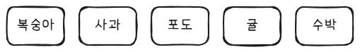
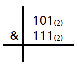

1. 공간정보 코딩 기초
1. 프로그램 내에서 변수에 저장된 자료가 실제로 저장되는 곳은?
- CPU
- 메모리
- GPU
- HDD
2. 메모리에 다음과 같은 코드를 실행한 후의 메모리의 모습으로 맞는 것은?
a = 5
b = 10


3. 메모리에 다음과 같은 코드를 실행한 후의 메모리의 모습으로 맞는 것은?
a = 5
b = 10
a = 7
4. 다음 중 사용할 수 있는 변수명은?
- 3rd
- int
- my love
- _int
5. 기본 데이터 타입에 대해 잘못 설명한 것은?
- int : 정수
- float: 소수점이 있는 실수
- char: 문자열
- boolean: 참/거짓
6. 다음 Big-O notation을 봤을 때 가장 빠른 알고리즘은?
- O(n)
- O(log n)
- O(nlog n)
- O(1)
7. 메모리에 다음과 같이 저장된 리스트에서 컴퓨터의 입장으로 봤을 때 3번쨰에 있는 원소는?

- 복숭아
- 사과
- 포도
- 귤
8. First In First Out 을 구현한 자료구조는?
- list
- queue
- stack
- linked list
9. First In Last Out( = Last In First Out) 을 구현한 자료구조는?
- list
- queue
- stack
- linked list
10. linked list에 대해 잘못 설명한 것은?
- 메모리를 효율적으로 사용할 수 있다.
- 추가 삭제가 빠르다.
- 데이터 탐색에 시간이 오래 걸릴 수도 있다는 단점이 있다.
- '복숭아', '사과', '포도', ... 등을 위한 데이터 공간 외에는 별도의 메모리 공간이 필요없다.
11. 자료관계를 선으로 구현한 자료구조는?
- tree
- binary tree
- map
- graph
12. 탐색기의 폴더 구조와 같은 계층적 표현에 적합한 자료구조는?
- tree
- binary tree
- map
- graph
13. 모든 노드가 최대 2개의 자식 노드를 가지는 tree 형태의 자료구조는?
- tree
- binary tree
- map
- graph
14. key : value 형식으로 값을 저장하는 자료구조로 영어사전 등에서 사용하는 자료구조는?
- tree
- binary tree
- map
- graph
15. 다음 중 산술연산자에 대해 잘못 설명한 것은?
/: 나눗셈++: 1 증가--: 1감소%: 나눗셈의 몫
16. 다음 중 관계연산자에 대해 잘못 설명한 것은?
==: 같다!==: 같지 않다<=: 오른쪽이 크거나 같다>: 왼쪽이 크다
17. 다음 비트연산의 결과는?

- 111
- 110
- 010
- 101
18. 다음 코드의 결과, 변수 a에 저장되는 값은?
a = 1
a += 2
- 1
- 2
- 3
- 4
19. stack과 heap에 대한 설명 중 잘못된 것은?
- stack은 작고 빠른 반면, heap은 크고 느리다.
- stack은 동적처리에 사용되고, heap은 정적처리에 사용된다.
- 다 사용 후 stack은 OS가 자동으로 삭제해 주지만 heap은 그렇지 않아 개발자가 직접 정리해야 한다.
- stack은 관리가 용이한 작은 창고같은 느낌이라면 heap은 넓고 황량한 공터같은 느낌이다.
20. 자바 언어가 윈도우에서도, macos에서도 linux에서도, 다양한 OS에서 실행될 수 있는 이유는?
- 컴퍼넌트 방식 때문
- 대화형 언어이기 때문
- JVM(Java Virtual Machine) 구조이기 때문
- 객체지향 언어이기 때문
21. 객체지향의 4대 특성이 아닌 것은?
- abstraction(추상화)
- inheritance(상속)
- encapsulation(캡슐화)
- polymorphism(다형성)
- brevity(간결성)
22. 상위 객체에서 정의한 기능을 상속받은 하위 객체에서 재정의하는 것을 의미하는 것은?
- overloading
- overriding
- interface
- encapsulation
23. 하나의 클래스에 같은 이름의 메소드가 여러 개 있는 것을 무엇이라 하나. ?
- overloading
- overriding
- interface
- encapsulation
24. '나는 이 이름의 기능은 꼭 제공할꺼야' 라는 약속을 뜻하는 것은?
- overloading
- overriding
- interface
- encapsulation
25. 좋은 설계에 대해 잘못 설명한 것은?
- 객체들 간의 의존도를 최소화한다
- 객체들끼리 서로서로 잘 알고 있다
- 객체 간 신호 전달은 이벤트를 이용한다.
- 한 번 만든 객체를 다른 프로그램에서도 사용할 수 있다
26. 버튼을 누를 때마다, 예를 들면 '저장'이라고 적힌 버튼을 누르면 파일이 저장되는데, 이렇게 어떤 버튼을 눌렀을 때 그에 맞는 행동을 하도록 하는 것을 무엇이라 하나?
- event
- event handling
- processor
- error handling
27. 프로그램 에외 처리에 대해 잘못 설명한 것은?
- try-catch-finally 기법을 사용한다.
- 파일을 열려고 했으나 파일이 없는 등 문제가 발생할 수도 있는 코드를 try 안에 적는다.
- 실제 파일이 없어 예외 사항이 발생했다면 catch 부분이 실행된다.
- catch 부분이 실행된 경우에만 finally 부분이 실행된다.